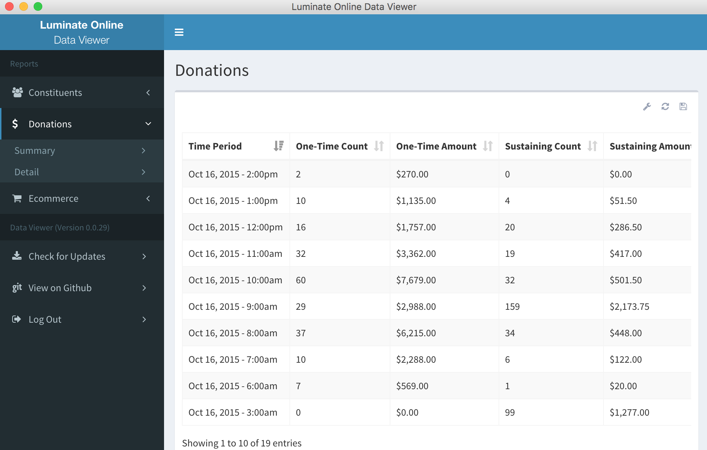
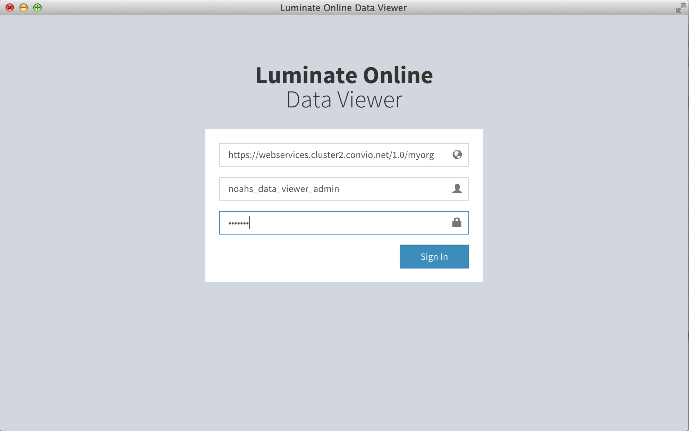

About
The Luminate Online Data Viewer allows organizations to gain insight into the performance of their online marketing campaigns with up-to-the-minute reporting using Luminate Online Web Services.

Download
The Data Viewer is available for 32- and 64-bit Windows and OS X operating systems.
Windows (32-bit)
Windows (64-bit)
OS X (32-bit)
OS X (64-bit)
Logging In
TODO

To login, you'll need a few pieces of information:
- The Web Services URL for your organization. This should look something like
https://webservices.cluster2.convio.net/1.0/myorg. You can find this URL in the Luminate Online administrative interface under Setup -> Site Options. Click the Open API Configuration tab and scroll down to the "Configure Luminate Online WebServices" section. - The username and password for an API Administrator account. On the same Open API Configuration tab, click the "Edit server API configuration" link next to "Configure API to allow server access". Under "Manage API Administrative Accounts", use one of the existing accounts created for your organization or create a new one.
For added security,
Customize
TODO